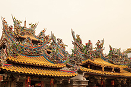
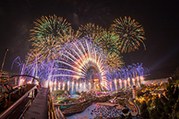
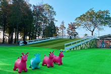
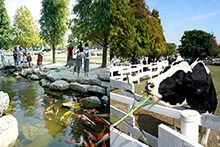

北港朝天宮：
北港朝天宮，俗稱北港媽，當地人稱媽祖宮，舊稱為天后宮。是一座位在臺灣雲林縣北港鎮的媽祖廟，主祀天上聖母媽祖。 據信眾相傳，該廟由樹璧和尚創立於康熙三十三年。

劍湖山世界主題樂園：
劍湖山世界是臺灣主題遊樂園，通稱劍湖山，位於雲林縣古坑鄉永光村劍湖附近，綜合「休閒、遊樂、文化、科技」四大功能。全園佔地面積60多公頃，主要大型熱門活動常見為痛車，為嘉義耐斯企業旗下之大型遊樂園。和義大世界、六福村、九族文化村並稱臺灣遊樂園的「一三六九」。

古坑鹿營親子農場：
這裡有超多小朋友的戶外遊戲區， 也有可愛動物餵食區， 另外在親子餐廳內， 還有室內的遊戲區， 可以讓小朋友在這裡放電一整天。

千巧谷牛樂園牧場：
農場內有超吸睛的繽紛彩繪牆、免費大沙坑、銅板價購買飼料、牧草來餵魚、餵乳牛， 還附設餐廳、飲料舖、麵包店…完全不用擔心肚子餓，還能順便帶伴手禮回家～很適合親子同遊!